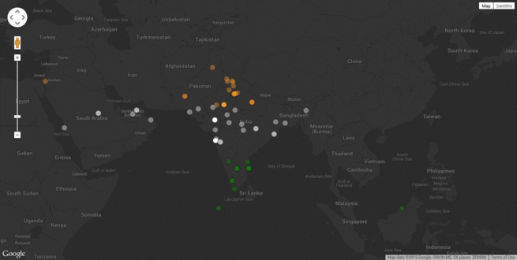

I wanted to write some piece of code dedicated to the country on the eve of India's independence day and thought of doing something with Twitter and maps.
I came across this blog post and it was pretty close to what I was planning to do. The code had to be cleaned up a little though.
I modified the tstream.py file so that it saved only the tweets containing location info into the MongoDB collection instead of the original code that saved every tweet into the collection and then let the server process all of it when the map is loaded.
Also, I had to use geocoding to convert the place names to coordinates so that they could be plotted on the map. This was because, I could find very few geotagged tweets but there were a lot more tweets that came with city information.
I then modified the JS code in the map so that it displayed a normal map instead of a heatmap. It was then that the idea of using tricolored markers came into my mind. I approximately divided India into three parts and gave each marker the corresponding tricolor based on the latitude.
After that, all I had to do was run the mongo server using sudo service mongod start and then start the Redis server using redis-server. I then ran the tstream.py and also ran the tweet_service.py.
When I then opened localhost:5000/static/map.html in my browser, I could see this cool map getting plotted by markers one by one. Here is a small GIF to give an idea.
